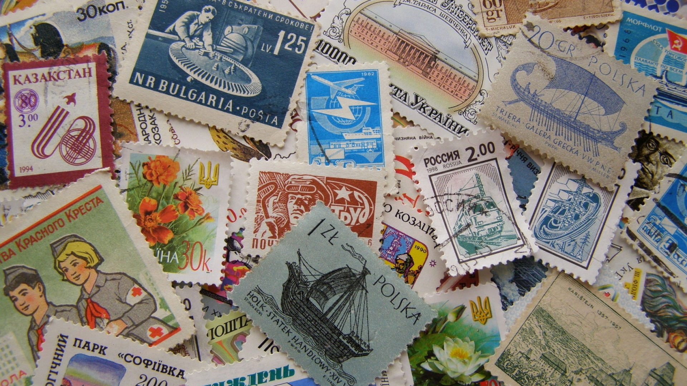
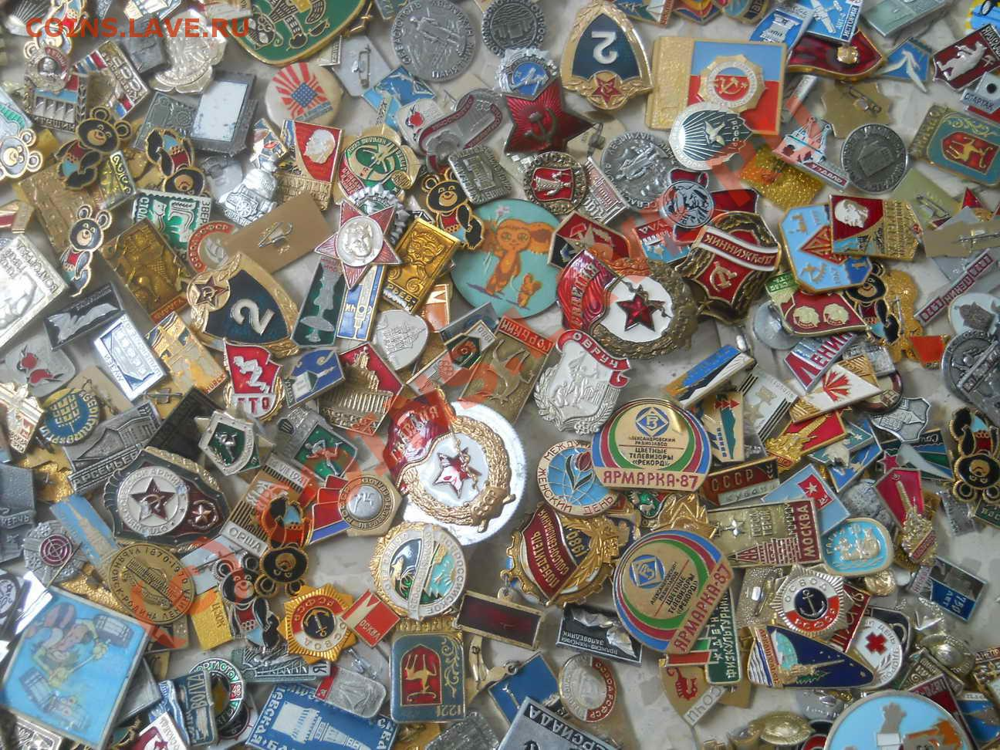
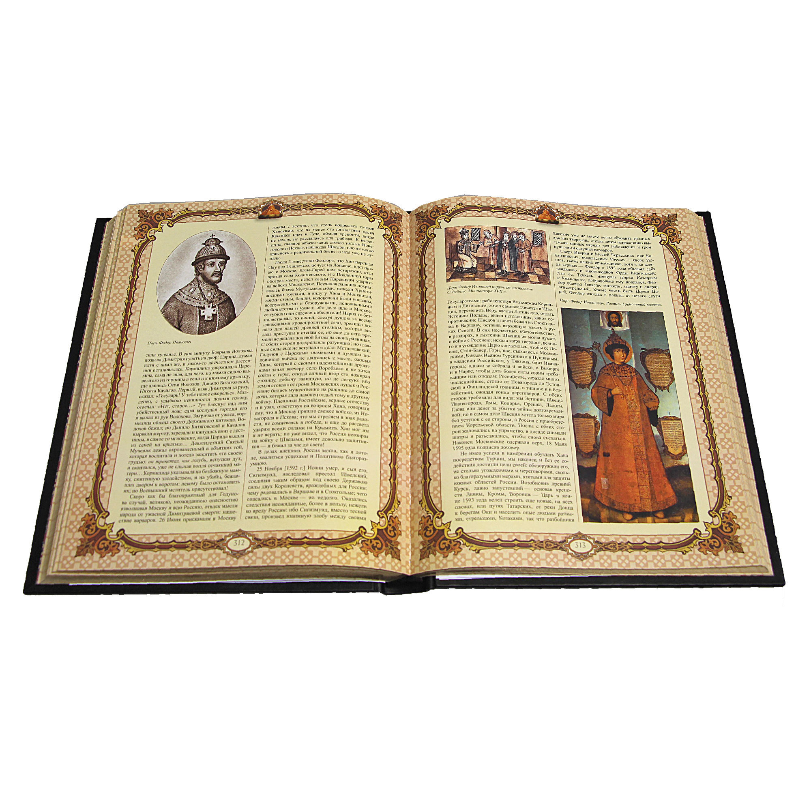

My hobby
Childhood Hobbies
Stamps
Many children collected stamps. I didn't get away from it either. My topic was technology-planes, cars, locomotives, ships. Everything that moved, puffed, rattled, smoked. But this was not a fanatical hobby. Just went shopping with friends "Philately" and kiosks "Soyuzpechat" and bought stamps with pocket money. It didn't grow into anything more serious.
Badges
Collecting badges was also something that attracted probably all children in my childhood. We exchanged them, searched the stores and kiosks. I remember my sister had a huge collection of badges with images of all the medals and orders of the USSR, and in full size. What made them different was that they were icons. Although it looks almost indistinguishable. How we envied her.
Sciences
My favorite Sciences have always been exact Sciences (mathematics, physics), except chemistry. I never liked chemistry. I also loved history. I read many books on Russian and foreign history. The love of history has been preserved to this day. However, as well as the love of exact Sciences. Hence the desire to find time and fully study programming.
Спорт
Sports come last. And so it was. I tried different sports-Boxing, swimming. Football and hockey-played in the yard like everyone else, but there was no special love for these sports. I always wanted to play tennis, but when I was a teenager, it was a sport for the elite, and then just wasn't up to it. In the end, all sports ended-weights, barbell and other improvised materials that you can work with at home in your free time. Although as a child, I still ran quite well, including skiing.
What now?
All the passions of childhood are gone. Stamps in blassers and albums are stacked on the mezzanine. There are also boxes with icons. Of the children's Hobbies, only sports in the form of home training on simulators and love of exact science and historyremained. There was also a passion for photography - even at the time (when it was difficult to buy a good magnifier), I put it together with my own hands. This mysterious process of developing film and photos-it was a miracle-when a photo suddenly appeared on an empty photo paper. Now digitized images - a digital camera, a printer for printing photos and everything is ready - is not the same. So now all my Hobbies are learning and learning new things, especially in the areas where I work or in related fields. I study all new trends in project management (which is exactly what I do). Now I am interested in Agile methodology, studying both the methods themselves (Scrum, Kanban, Lean, and others) and the principles, as well as the accompanying techniques of situational leadership and facilitation. I evaluate my previous experience in project management and evaluate how I could solve certain problems using these methods and techniques. This is also attracted by the fact that I have tried to use certain methods and principles in projects before (splitting projects into short stages with the result, building relationships with people based on the situation, targeting the team on the result as the main indicator of work, and others) just didn't know what it was called. So it became a new interest and passion. The second is English, I think also Spanish. I had studied English a lot before, but in everyday life I didn't need much and my conversational practice went away. I regret that I did not pay such attention to the language before. Now this is a new hobby that I devote my free time to. And programming. I've always wanted to learn programming. Since high school, when they studied basic and Pascal. But then the routine got too long. And in the last few years, I have to manage software development projects and I realize that I lack this knowledge. That's why I decided to study Python (as one of the main languages used in working with data), JavaScript (and its libraries), as well as HTML and CSS. This is also a hobby. Who knows, maybe this hobby will become my main job, because I like it, and a good basic mathematical training allows me to cope with solving various problems. As well as project management experience. So I divide my time-I study new technologies (in terms of artificial intelligence) and project management techniques, programming and foreign languages.